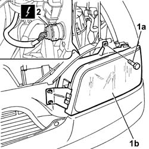
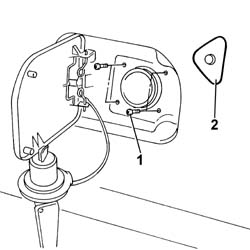
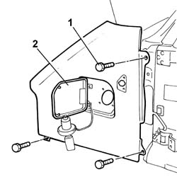

7210E18 R.R. FRONT WING
- Path
- Procedures > 72 PANELS AND FRAME > 7210 REMOVING REFITTING > 7210E EXTERNAL PARTS > 7210E18 R.R. FRONT WING
- Kind
- repair procedure (removal / refitting; the operation number is the code)
- Applies to
- all engines; all production periods
- Interactive page
- https://sloeber94.github.io/elrnDB-fDct/en/#/244001562
Applies to: all engines; all production periods
 Removing
Removing
 Refitting
Refitting- Disconnect the negative battery terminal.
Op. 4450B12 FRONT OR REAR WHEELS (TWO) - R+R
Op. 7055B64 LH OR RH REFLECTOR(ONE) ON REAR BUMPERS - R R
- < R1 > [both sides]
Op. 7055B54 UNDER-ENGINE GUARD - R R
- < R1 > bumper
1. Undo the upper bolt (1a) fixing the light cluster (1b).
2. Disconnect the electrical connector for the light cluster.
 | Description | Connector |
|---|---|---|
2 | Right headlamp | F011 |
| Description | Connector |
|---|---|---|
2 | Left headlamp | F010 |

Applies to: all engines; all production periods
- Release the light cluster from the fitting using a suitable tool.
- Turn the light cluster over and fasten it.
- Open the fuel filler flap.
- Remove the fuel cap.
1. Undo the bolts fixing the tank filler.
2. Release the direction indicator from the housing.
- Disconnect the direction indicator electrical connector.
| Description | Connector |
|---|---|---|
. | Left side direction indicator | F020 |
| Description | Connector |
|---|---|---|
. | Right side direction indicator | F021 |
- Remove the direction indicator.

Applies to: all engines; all production periods
- Partly release the engine compartment seal.
1. Undo the bolts fixing the wing.
2. Remove the wing.

Applies to: all engines; all production periods
Refitting
Removing- Place the wing in the correct fitting position.
- Fasten the wing to the bodyshell tightening the fixing bolts.
- Place the engine compartment seal in position.
- Connect the direction indicator electrical connector.
| Description | Connector |
|---|---|---|
. | Left side direction indicator | F020 |
| Description | Connector |
|---|---|---|
. | Right side direction indicator | F021 |
- Fit the direction indicator in the special housing in the wing.
- Fasten the tank filler tightening the fixing bolts.
- Close the filler using the special cap.
- Close the fuel flap.
- Fasten the front light cluster securing it using the fitting and tightening the upper fixing bolt.
- Connect the electrical connector for the light cluster.
| Description | Connector |
|---|---|---|
. | Right headlamp | F011 |
| Description | Connector |
|---|---|---|
. | Left headlamp | F010 |
Op. 7055B54 UNDER-ENGINE GUARD - R R
Op. 7055B64 LH OR RH REFLECTOR(ONE) ON REAR BUMPERS - R R
- < R1 > [both sides]
Op. 4450B12 FRONT OR REAR WHEELS (TWO) - R+R
- Connect the negative battery terminal.